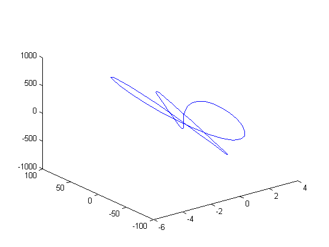
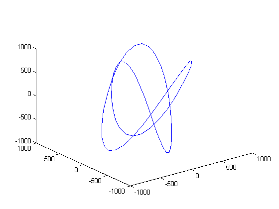
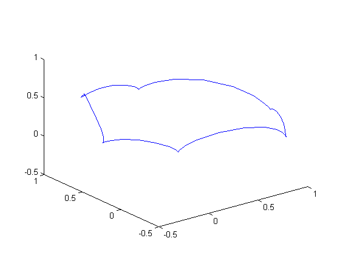
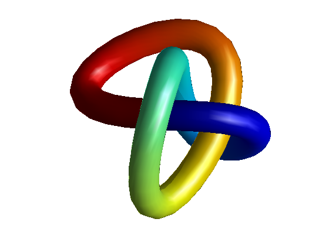

3 次元の結び目
チューブ状の表面のパラメトリックな表現を計算し、SURF を使用してチューブを表示します。
Rouben Rostamian によるオリジナル コード、1991 年 3 月。Cleve Moler による Titan MATLAB® から MATLAB® V4.0 への修正、1991 年 9 月。
目次
パラメーターの設定
% Number of grid points in each (circular) section of the tube. m = 20; % Number of sections along the tube. n = 60; % Radius of the tube. R = 0.75; % Symmetry index.Try q=floor(n/3) (symmetric) or q=floor(n/4) q = floor(n/3); % Do not change this! t = (0:n)/n;
生成関数の指定
生成関数 f0 は、1 周期でなければなりません。f1 と f2 は、f0 の 1 次および 2 次導関数です。
a = 2; b = 3; c = 1.5; q1=2; q2=4; f0 = sin(q1*pi*t) + a*sin(q2*pi*t) - ... b*cos(4*pi*t)/2 + c*sin(6*pi*t); f1 = (q1*pi)*cos(q1*pi*t) + a*(q2*pi)*cos(q2*pi*t) + ... b*(4*pi)*sin(4*pi*t)/2 + c*(6*pi)*cos(6*pi*t); f2 = -(q1*pi)^2*sin(q1*pi*t) - a*(q2*pi)^2*sin(q2*pi*t) + ... b*(4*pi)^2*cos(4*pi*t)/2 - c*(6*pi)^2*sin(6*pi*t); plot3(f0,f1,f2)
表面の生成
2 周期の区間に f を周期的に拡張することから開始:
f0 = [ f0(1:n) f0(1:n) ]; f1 = [ f1(1:n) f1(1:n) ]; f2 = [ f2(1:n) f2(1:n) ];
[x10;x20;x30] は、チューブの中心線のパラメトリックな表現です。
x10 = f0(1:n+1); x20 = f0(q+1:q+n+1); x30 = f0(2*q+1:2*q+n+1); clf plot3(x10,x20,x30)

[x11;x21;x31] は、速度 (正接と同じ) ベクトルです。
x11 = f1(1:n+1); x21 = f1(q+1:q+n+1); x31 = f1(2*q+1:2*q+n+1); plot3(x11,x21,x31)

[x12;x22;x32] は、加速度ベクトルです。
x12 = f2(1:n+1); x22 = f2(q+1:q+n+1); x32 = f2(2*q+1:2*q+n+1); plot3(x12,x22,x32)
スピードの計算:
speed = sqrt(x11.^2 + x21.^2 + x31.^2); plot(speed)

これは、速度と加速度ベクトルの内積です。
velacc = x11.*x12 + x21.*x22 + x31.*x32; plot(velacc)

正規化した法線ベクトルを計算します。
% Here is the normal vector: nrml1 = speed.^2 .* x12 - velacc.*x11; nrml2 = speed.^2 .* x22 - velacc.*x21; nrml3 = speed.^2 .* x32 - velacc.*x31; normallength = sqrt(nrml1.^2 + nrml2.^2 + nrml3.^2); % And here is the normalized normal vector: unitnormal1 = nrml1 ./ normallength; unitnormal2 = nrml2 ./ normallength; unitnormal3 = nrml3 ./ normallength; plot3(unitnormal1,unitnormal2,unitnormal3)

従法線ベクトル ( B = T x N )
binormal1 = (x21.*unitnormal3 - x31.*unitnormal2) ./ speed; binormal2 = (x31.*unitnormal1 - x11.*unitnormal3) ./ speed; binormal3 = (x11.*unitnormal2 - x21.*unitnormal1) ./ speed; plot3(binormal1,binormal2,binormal3)
s は、チューブの循環的な断面に沿った座標です。
s = (0:m)'; s = (2*pi/m)*s;
x1、x2、x3 はそれぞれ (m+1) 行 (n+1) 列の行列です。行は、チューブに沿った座標を表します。列は、チューブの各 (循環的な) 断面の座標を表します。
xa1 = ones(m+1,1)*x10; xb1 = (cos(s)*unitnormal1 + sin(s)*binormal1); xa2 = ones(m+1,1)*x20; xb2 = (cos(s)*unitnormal2 + sin(s)*binormal2); xa3 = ones(m+1,1)*x30; xb3 = (cos(s)*unitnormal3 + sin(s)*binormal3);
最終的な表面を計算します。
x1 = xa1 + R*xb1; x2 = xa2 + R*xb2; x3 = xa3 + R*xb3; color = ones(m+1,1)*((0:n)*2/n-1);
表面のプロット
surf(x1,x2,x3,color); shading interp; light lighting gouraud % 'lighting phong' will use zbuffer, slower view(2) axis equal off axis vis3d % for smooth rotate3d